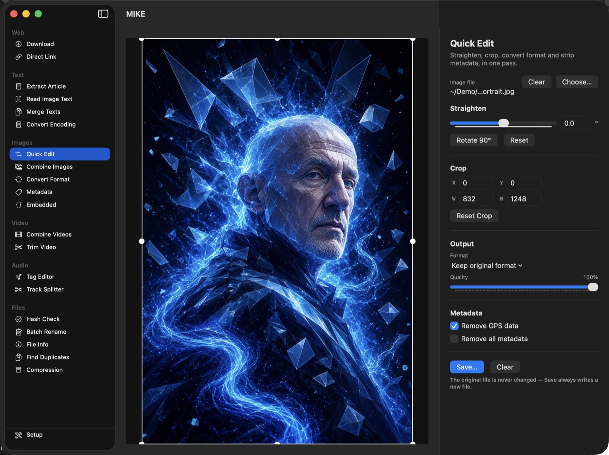
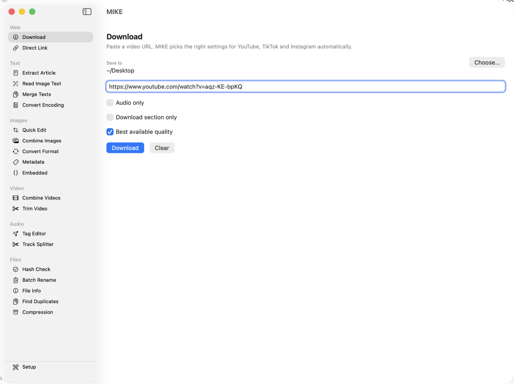
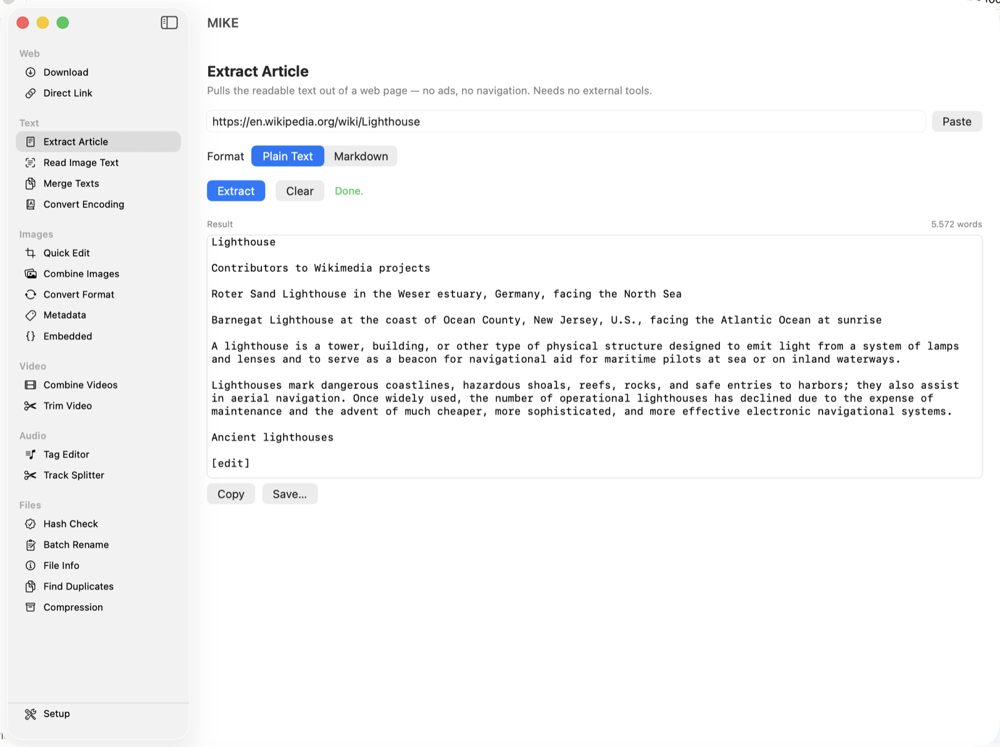
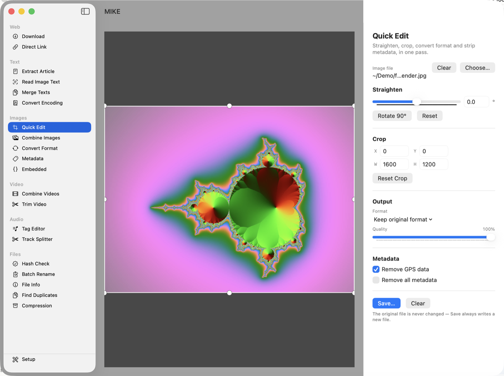
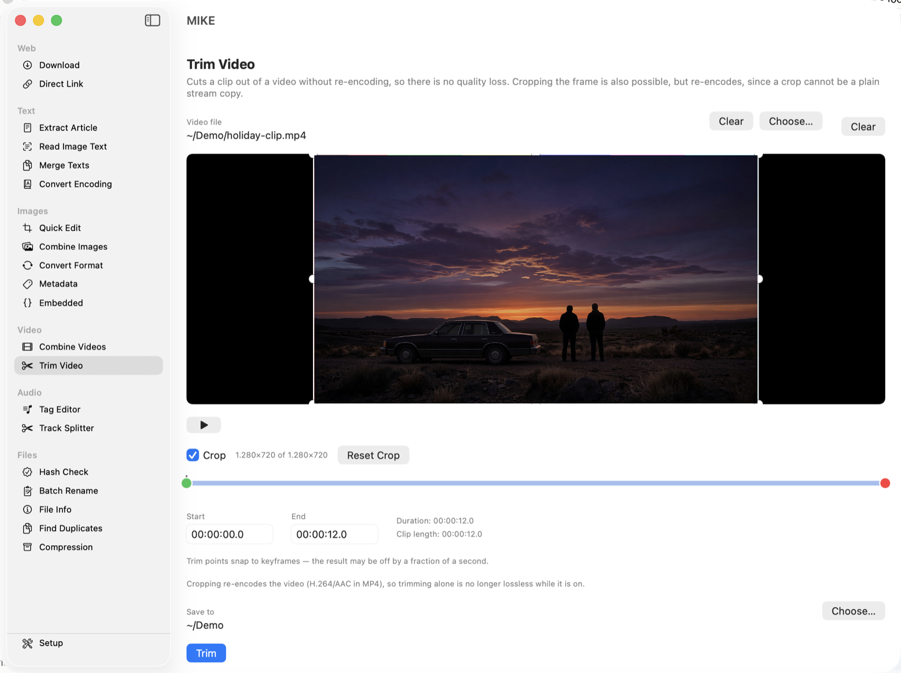
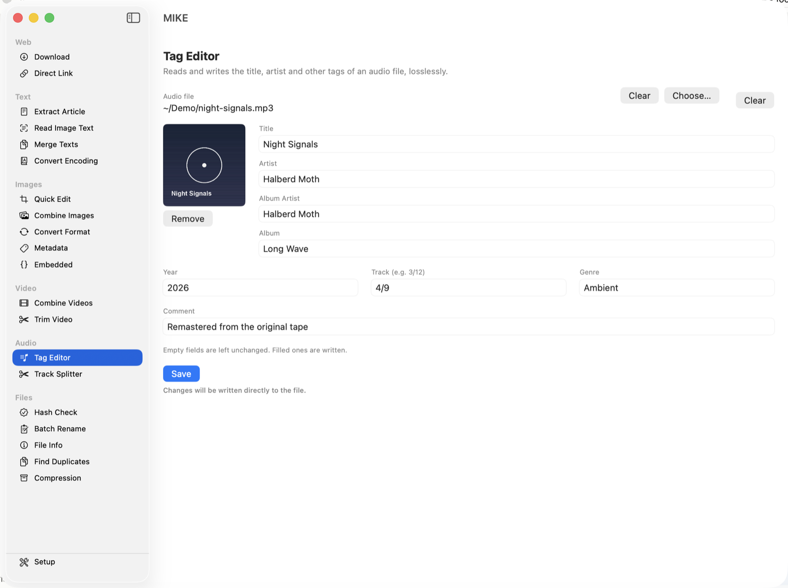
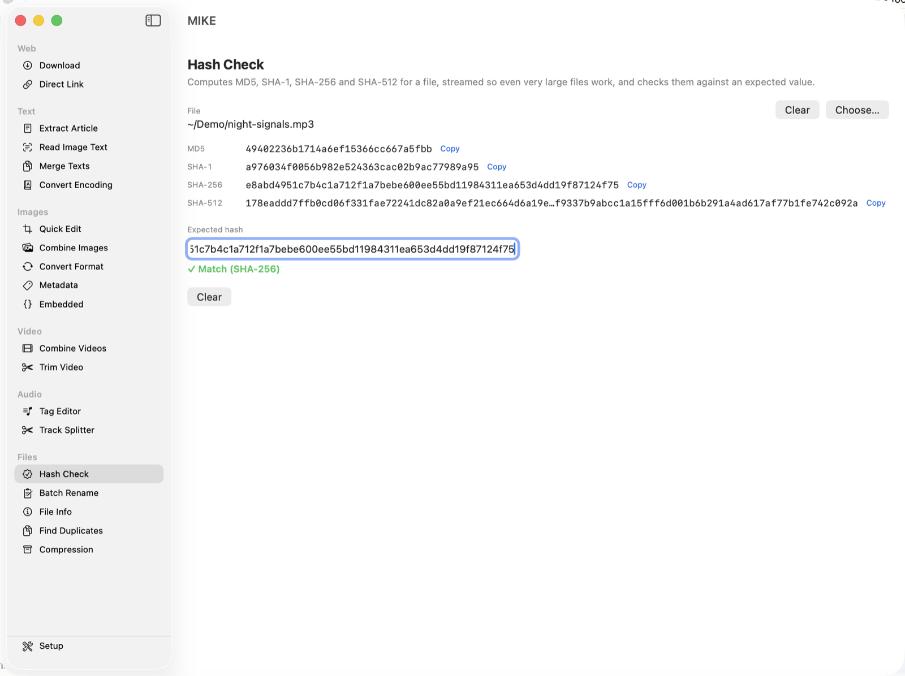

Twenty tools for everyday media chores, in one small Mac app.
Download videos, edit and convert images, extract text, manage files, split and tag audio, pack and unpack archives — twenty independent tools, free and open source, no account, no tracking.
macOS 13 Ventura or later · Apple Silicon · GPLv3

Every tool works on its own, picked straight from the sidebar. No project files, no setup screens — choose a tool and go.
Fetch a video with the right settings picked automatically by site, or turn a TikTok page into a direct link on the clipboard.

Pull the readable text out of a web page, recognize text in a photo or screenshot, merge text files together, or convert between character encodings.

Straighten, crop, convert and strip metadata in one pass, join images into one, convert between formats, and view or edit EXIF/GPS and embedded metadata.

Join clips without re-encoding, or cut a clip down with a draggable timeline — optionally cropping the frame too, handy for black bars on a portrait recording.

Read and write title, artist, cover art and the rest, or split one long recording into separate tracks at the silences between them.

Verify checksums against an expected value, batch-rename with chainable rules, inspect a file's details, find duplicates, or pack and unpack ZIP/TAR.GZ archives.

Nothing is ever overwritten. A second run of any tool writes combined (2).jpg rather than replacing the first, and edits that need a backup — like metadata changes — always keep the untouched original alongside.
A few practical details before you download.
English, German and Spanish, picked automatically from your system language.
yt-dlp and ffmpeg are never bundled — MIKE finds them on your system, so they stay current through your own package manager.
Everything runs locally. Nothing is uploaded anywhere unless a tool's whole purpose is fetching something from a URL you gave it.
MIKE is free software under the GNU GPL v3. If it saved you some hassle, you can leave a tip.
Buy me a coffee